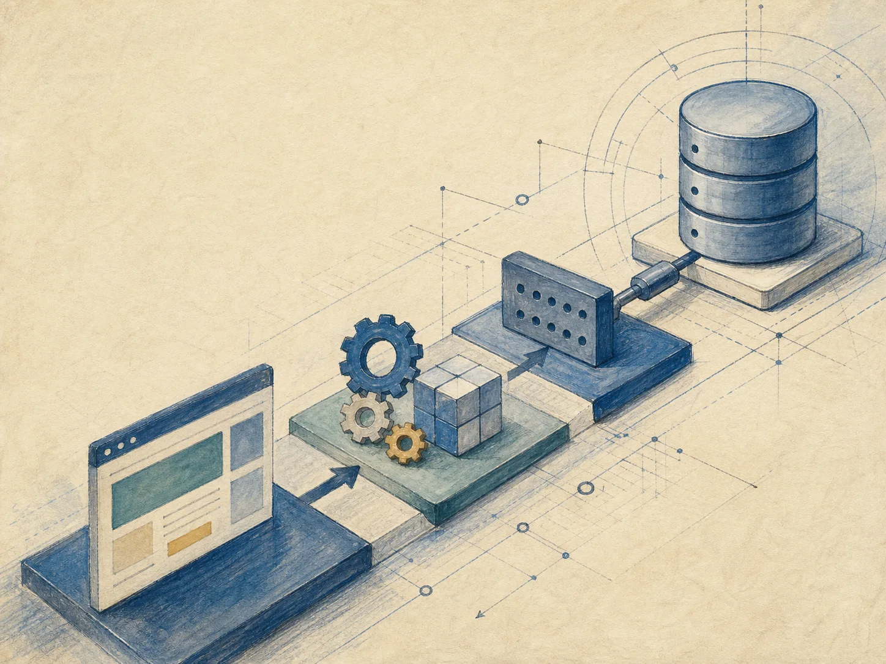
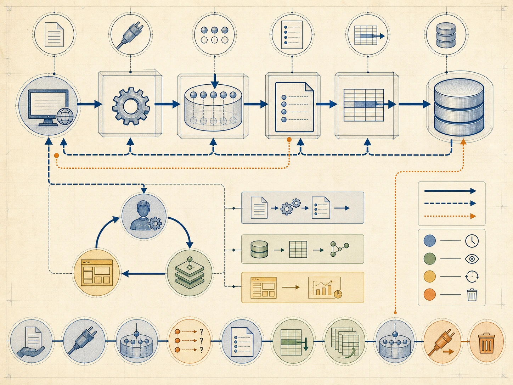
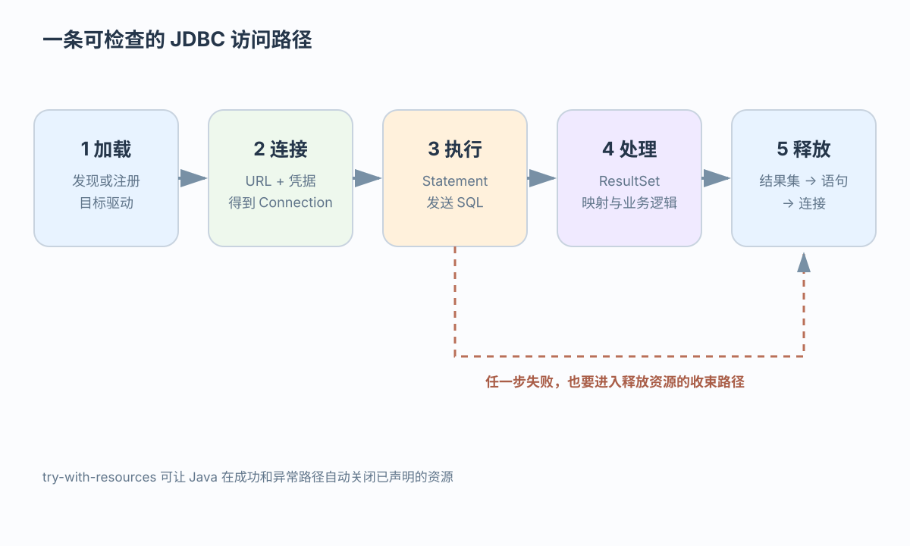
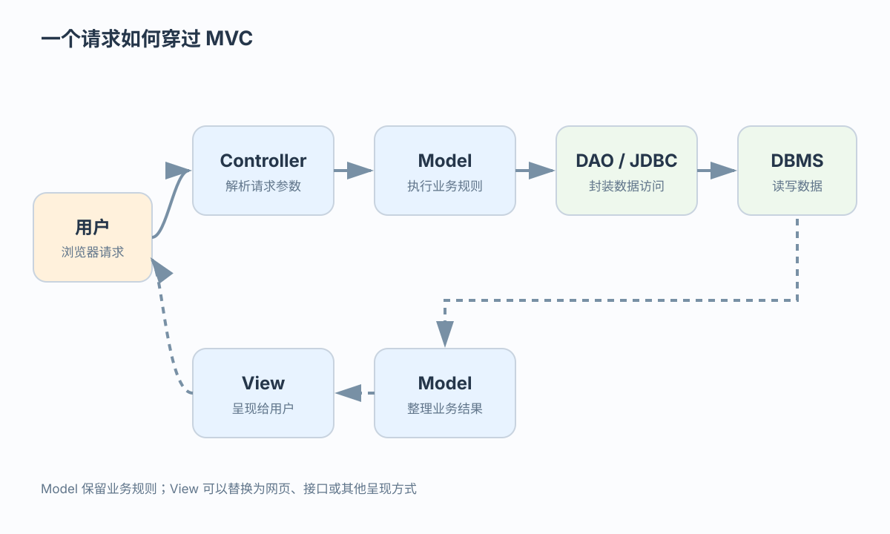
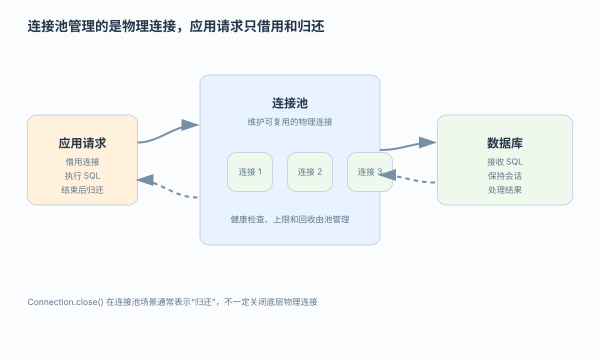

位置
服务器地址、端口和数据库名

让教师的一次回复从网页到数据库，再把结果返回且不泄漏连接
 VER. 2608
Built with impress.js
VER. 2608
Built with impress.js
追踪教师回复从参数、SQL 到页面，并证明成功或报错都会归还连接
Statement、PreparedStatement 或 CallableStatementResultSet 的最小遍历与类型读取结构应用程序通过 JDBC API 访问数据，不直接接触数据库文件或厂商内部函数

不等于完全可移植。URL、驱动、SQL 方言、类型映射、权限和模式仍可能需要适配
服务器地址、端口、数据库名、账号和驱动匹配后，应用才能取得 Connection
服务器地址、端口和数据库名
用户名、密码和权限
目标 DBMS 和匹配驱动
01
02DriverManager.getConnection(URL, user, password) → Connection
DataSource.getConnection() → ConnectionDataSource 可以由应用服务器或连接池统一配置；应用代码不应把凭据散落在业务方法中
DataSource 取连接，Connection 管事务，语句执行，ResultSet 读行后关闭
| API | 主要职责 | 常见调用 |
|---|---|---|
DriverManager／DataSource | 取得连接 | getConnection(...) |
Connection | 管理连接和事务边界 | prepareStatement()、prepareCall()、close() |
Statement | 执行静态 SQL，不负责参数绑定 | 固定语句 |
PreparedStatement | 执行参数化 SQL | ?、setXXX() |
CallableStatement | 调用存储过程 | 输入输出参数 |
ResultSet | 读取查询结果 | next()、getXXX() |
getConnection() 属于 DriverManager 或 DataSource；Connection 负责在连接建立后创建语句、管理事务和释放连接
SELECT 返回行集，更新返回行数，过程还可能返回结果集或输出参数
| 方法 | 适用场景 | 应用拿到的结果 |
|---|---|---|
executeQuery() | SELECT 等查询 | 一个 ResultSet |
executeUpdate() | INSERT、UPDATE、DELETE，以及部分 DDL | 受影响的行数或产品定义的更新结果 |
execute() | 可能产生多种结果的语句或过程调用 | 再取 ResultSet、更新行数或过程输出 |
01
02
03
04
05CallableStatement cs = conn.prepareCall("{CALL compGPA(?,?)}");
cs.setString(1, sno);
cs.registerOutParameter(2, Types.REAL);
cs.execute();
float gpa = cs.getFloat(2);CallableStatement 通过 JDBC 调用存储过程；具体占位符、类型和结果处理按目标 DBMS 与驱动核对
无论成功或报错，按 ResultSet → Statement → Connection 逆序关闭或归还

DataSource，获取 ConnectionResultSet、更新行数或过程输出，并执行业务逻辑ResultSet → Statement → Connection 逆序关闭或归还JDBC 4 以后驱动可能由服务机制自动发现；任一步异常都要进入资源释放路径，try-with-resources 可覆盖成功和异常路径
输入值进入 SQL，查询结果再回到 Java 变量
?→setXXX()→SQL 参数 输出：ResultSet→next()→getXXX()→Java 变量| 方向 | 负责什么 | 边界 |
|---|---|---|
| 参数绑定 | 把 Java 值按类型传给 ? | 不拼接 SQL 结构 |
| 类型映射 | 在 SQL 类型与 Java 类型间转换 | 选择匹配的 setXXX／getXXX |
| 结果读取 | 移动游标并读取当前行 | 先 next()，再 getXXX() |
参数化可降低 SQL 注入风险，但不替代权限、业务校验和事务控制
代码只做一次查询；网页请求、业务规则和结果显示由 MVC 其他部分负责
01
02
03
04
05
06
07
08
09
10
11
12String sql =
"SELECT Sno, CAtype FROM ClassAssess WHERE Tno = ?";
try (PreparedStatement ps = conn.prepareStatement(sql)) {
ps.setString(1, tno);
try (ResultSet rs = ps.executeQuery()) {
while (rs.next()) {
String rowSno = rs.getString("Sno");
boolean type = rs.getBoolean("CAtype");
}
}
}默认结果集游标从第一行之前开始，并按行向前移动；next() 返回布尔值
getXXX(列名／从 1 开始的列号)→应用处理只有移动到有效行后才能读取列；ResultSet 游标由 JDBC 结果对象管理，过程化 SQL 游标由数据库程序定义和使用
频繁建连或忘记关闭都会拖累性能；try-with-resources 可覆盖异常路径
| 资源 | 关闭顺序 | 目的 |
|---|---|---|
ResultSet | 第一层 | 释放结果集资源 |
| 语句对象 | 第二层 | 释放执行资源 |
Connection | 最后一层 | 关闭或归还连接 |
连接池中的 Connection | close() 后交回池 | 避免反复建立物理连接 |
不能。资源通常按获取顺序的反向释放；池耗尽、连接泄漏和归还失败都需要监控
Controller 接收请求，Model 执行业务，View 呈现结果

同一 Model 可以服务网页、接口或其他呈现方式
Controller 读参数，Model 判能否回复，DAO 更新，View 显示结果
Tno + TCno + Sno + FeedbackreplyFeedback，交给 DAO／JDBC 更新 ClassAssess对称的学生评价路径：输入 Sno + TCno + Assess，再经 Controller、Model 和 DAO／JDBC 写入 ClassAssess
它们减少重复 JDBC 或 CRUD 代码，但不决定事务、权限或查询速度
把 SQL/JDBC 访问封装成查询或更新方法
映射关系、列与业务对象，减少手写常规 CRUD SQL
两条数据路径：Model → DAO → JDBC → DBMS；或 Model → 持久层／DAO → ORM → DBMS
事务、权限、查询性能和数据语义仍需要开发者负责
请求复用物理连接；连接池设上限、等待超时和健康检查，并监控未归还连接

| 方式 | 请求行为 | 性能影响 |
|---|---|---|
| 每次新建 | 建立、使用、关闭 | 连接开销反复发生 |
| 连接池 | 借用、使用、归还 | 复用物理连接 |
| 池设置 | 上限、超时、健康检查、回收 | 泄漏会让后来请求一直等不到连接 |
从教师号、班号、学生号和回复出发，写明谁校验、更新、显示和归还连接
Controller 校验请求，DAO 使用 PreparedStatement；setXXX 只绑定值，不拼接 SQL 结构
更新读取影响行数；查询先 next() 再 getXXX()；所有出口逆序释放或归还资源
Controller 分流；Model 决策；DAO 更新；View 呈现
记录异常、提交或回滚结果、连接借出和归还；用了 DAO 或 ORM 仍要检查权限、SQL 方言和慢查询
compGPA 各选哪种 JDBC API？?、setXXX、next()、getXXX 分别负责什么方向？ResultSet、语句或连接会有什么风险？资源应按什么顺序释放？execute() 后如何判断并取得 ResultSet、更新行数或过程输出？Tno、TCno、Sno、Feedback 经过 Controller、Model、DAO／JDBC 和 View？